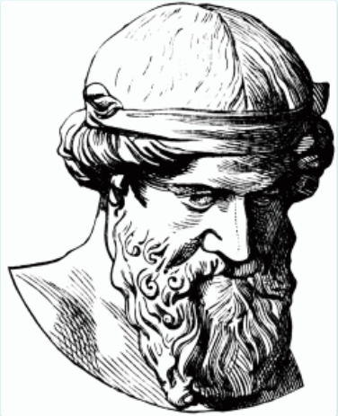
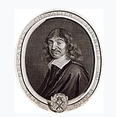
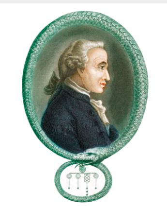
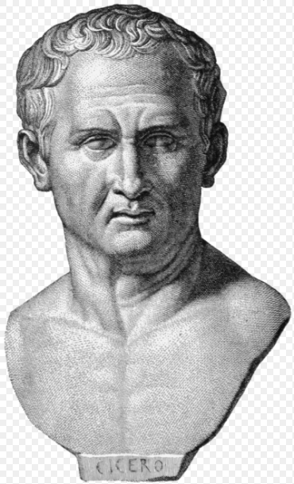

The dialogue form in which Plato writes is more than a mere literary
device; it is instead an expression of Plato’s understanding of the
purpose and nature of philosophy. For Plato, philosophy is a process of
constant questioning, and questioning necessarily takes the form of
dialogue. Near the end of the Phaedrus, Socrates expresses his
reservations about written texts, worrying that people will cease to think
for themselves when they have someone else’s thoughts written out in front
of them. Plato took it upon himself to write his thoughts down anyway, but
he was careful not to write them in such a way that we could easily
assimilate his thoughts rather than thinking for ourselves. Many of the
dialogues reach no definite conclusions, and those that do generally
approach those conclusions by casting doubts and examining possible
counterarguments. Plato cannot be there in person to share his thoughts
with us, but he wants to ensure that we think through them ourselves.
In keeping with this emphasis on dialogue form, Plato develops an
increasingly complex conception of dialectic, or logical argument, as the
engine that drives philosophical investigations. In the early dialogues,
dialectic consists of Socrates cross-examining and refuting his
interlocutors until he brings them to a state of perplexity, or aporia.
Beginning with the Meno, Plato recognizes that dialectic can lead people
not only to recognize their errors but also to positive discoveries, as
Socrates does with the slave boy in the Meno. Plato is sufficiently
impressed with the possibilities of the dialectic that, in the Republic,
he makes it the highest achievement of his rigorous education program. The
Phaedrus introduces a more systematic version of the dialectic, seeing it
as a matter of “division and generalization,” whereby we analyze concepts
so as to understand the precise relations between them. This process of
division and generalization becomes increasingly sophisticated throughout
Plato’s works, and we witness advanced versions of it in the Parmenides
and the Sophist.

Descartes was the first of the modern rationalists and has been dubbed the
'Father of Modern Philosophy.' Much subsequent Western philosophy is a
response to his writings, which are studied closely to this day. Descartes
thought that only knowledge of eternal truths – including the truths of
mathematics, and the epistemological and metaphysical foundations of the
sciences – could be attained by reason alone; other knowledge, the
knowledge of physics, required experience of the world, aided by the
scientific method. He also argued that although dreams appear as real as
sense experience, these dreams cannot provide persons with knowledge.
Also, since conscious sense experience can be the cause of illusions, then
sense experience itself can be doubtable. As a result, Descartes deduced
that a rational pursuit of truth should doubt every belief about sensory
reality. He elaborated these beliefs in such works as Discourse on the
Method, Meditations on First Philosophy, and Principles of Philosophy.
Descartes developed a method to attain truths according to which nothing
that cannot be recognised by the intellect (or reason) can be classified
as knowledge. These truths are gained "without any sensory experience,"
according to Descartes. Truths that are attained by reason are broken down
into elements that intuition can grasp, which, through a purely deductive
process, will result in clear truths about reality.
Descartes therefore argued, as a result of his method, that reason alone
determined knowledge, and that this could be done independently of the
senses. For instance, his famous dictum, cogito ergo sum or "I think,
therefore I am", is a conclusion reached a priori i.e., prior to any kind
of experience on the matter. The simple meaning is that doubting one's
existence, in and of itself, proves that an "I" exists to do the thinking.
In other words, doubting one's own doubting is absurd. This was, for
Descartes, an irrefutable principle upon which to ground all forms of
other knowledge. Descartes posited a metaphysical dualism, distinguishing
between the substances of the human body ("res extensa") and the mind or
soul ("res cogitans"). This crucial distinction would be left unresolved
and lead to what is known as the mind-body problem, since the two
substances in the Cartesian system are independent of each other and
irreducible.
§

Kant is one of the central figures of modern philosophy, and set the terms
by which all subsequent thinkers have had to grapple. He argued that human
perception structures natural laws, and that reason is the source of
morality. His thought continues to hold a major influence in contemporary
thought, especially in fields such as metaphysics, epistemology, ethics,
political philosophy, and aesthetics.
Kant named his brand of epistemology "Transcendental Idealism", and he
first laid out these views in his famous work The Critique of Pure Reason.
In it he argued that there were fundamental problems with both rationalist
and empiricist dogma. To the rationalists he argued, broadly, that pure
reason is flawed when it goes beyond its limits and claims to know those
things that are necessarily beyond the realm of every possible experience:
the existence of God, free will, and the immortality of the human soul.
Kant referred to these objects as "The Thing in Itself" and goes on to
argue that their status as objects beyond all possible experience by
definition means we cannot know them. To the empiricist he argued that
while it is correct that experience is fundamentally necessary for human
knowledge, reason is necessary for processing that experience into
coherent thought. He therefore concludes that both reason and experience
are necessary for human knowledge. In the same way, Kant also argued that
it was wrong to regard thought as mere analysis. "In Kant's views, a
priori concepts do exist, but if they are to lead to the amplification of
knowledge, they must be brought into relation with empirical data

The writings of Marcus Tullius Cicero constitute one of the most famous
bodies of historical and philosophical work in all of classical antiquity.
Cicero, a Roman statesman, lawyer, political theorist, philosopher, and
Roman constitutionalist, lived in 106–43 BC. He was a Roman senator and
consul (chief-magistrate) who played a critical role in the transformation
of the Roman Republic into the Roman Empire. A contemporary of famous
Roman politicians such as Julius Caesar and Pompey, Cicero is widely
considered one of Rome's greatest orators and prose stylists.
Cicero is generally held to be one of the most versatile minds of ancient
Rome. He introduced the Romans to the chief schools of Greek philosophy
and created a Latin philosophical vocabulary, distinguishing himself as a
linguist, translator, and philosopher. An impressive orator and successful
lawyer, Cicero probably thought his political career was his most
important achievement. Today, he is appreciated primarily for his humanism
and philosophical and political writings. His voluminous correspondence,
much of it addressed to his friend Atticus, has been especially
influential, introducing the art of refined letter writing to European
culture. Cornelius Nepos, the 1st-century BC biographer of Atticus,
remarked that Cicero's letters to Atticus contained such a wealth of
detail "concerning the inclinations of leading men, the faults of the
generals, and the revolutions in the government" that their reader had
little need for a history of the period.
During the chaotic latter half of the first century BC, marked by civil
wars and the dictatorship of Gaius Julius Caesar, Cicero championed a
return to the traditional republican government. However, his career as a
statesman was marked by inconsistencies and a tendency to shift his
position in response to changes in the political climate. His indecision
may be attributed to his sensitive and impressionable personality; he was
prone to overreaction in the face of political and private change. "Would
that he had been able to endure prosperity with greater self-control and
adversity with more fortitude!" wrote C. Asinius Pollio, a contemporary
Roman statesman and historian.